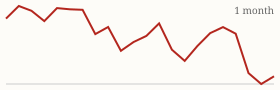
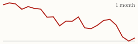

| Today's briefing for operators |
Top line: Cold calling is beating every other channel |
|
| Wednesday, November 4, 2026 | Late Edition | Curated from 63 voices on X |
|
Real Estate
Cold Calling Is Crushing Every Other Channel Right Now
Cole Ruud-Johnson has spent hundreds of thousands on most marketing channels. His bet today is the phone, as long as your team can close.
By @coleruudjohnson |
Cole Ruud-Johnson says cold calling is working "so well right now" for real estate investors. He likes every marketing channel and has spent hundreds of thousands of dollars on most of them, but his point is that cold calling wins when your sales process and team are tight enough to actually close the leads it produces. |
The CEO takeaway: the channel is only as good as what happens after the call. Before you add spend or callers, look at your conversion from conversation to appointment to contract, and fix the weakest step. Nick Maccini made a similar point about AI on the same day (below): tools make good systems cheaper, but they don't replace having them. |
|
| Read on X |
|
Mortgage Rates & Markets | Mortgage Rates Today's average lender rates | 30-year fixed | 7.30% | +0.03 | | 15-year fixed | 6.91% | -0.01 |
Daily change vs. prior day. Source: Mortgage News Daily, as of 11/3/2026 (updated weekdays about 4 PM ET). |
|
S&P 500 Close of Tue, Nov 3 S&P 500 7,568.92 ▲ +27.52 (+0.36%)  Yahoo Finance chart data (daily closes) |
|
Nasdaq Composite Close of Tue, Nov 3 Nasdaq Composite 25,372.01 ▲ +207.70 (+0.83%)  Yahoo Finance chart data (daily closes) |
|
| Real Estate & Deals | AI Speeds Up Good Systems, It Doesn't Build Them By @NickMaccini Nick Maccini says Grok has been amazing for him, but only because he already had tested systems and processes. AI lets him run them cheaper, cuts human error and frees up his head. Get the process right first, then automate it. Read on X |
No Environmental, No Deal By @ChrisRamsey60 Chris Ramsey's rule: if a seller refuses an environmental inspection, walk away. The downside of a hidden environmental problem is too big to risk on any one deal. Read on X |
Lawsuits Come With Volume By @Jacob_Naviaux Jacob Naviaux says that once you do enough deals, litigation becomes a reality: either enforcing a contract or defending against a claim you didn't disclose something you didn't know about. Tight contracts and written disclosures are cheap insurance as you scale. Read on X |
The First-Rental Math That's Gone By @Jacob_Naviaux Naviaux bought his first rental for $100,000 with 10% down, put $40,000 into it, rented it for $1,600 and refinanced at $161,250 six months later, cash-flowing a little over $300 a month. He says that same deal wouldn't work the same way today, which is why buy-box numbers need a fresh look. Read on X |
| AI Briefing | OpenAI hardware design video still. Image via @OpenAI on X OpenAI Takes AI Into Hardware Design By @OpenAI OpenAI shared how ChatGPT and Codex are helping with mechanical design, electrical engineering and simulation. The Rundown reports that GPT-6 Astra handled a gadget's case, circuit board and software in under a week alongside two staffers. Read on X |
Anthropic's FlashProve Verifies Which Model Answered By @AnthropicAI Anthropic introduced FlashProve, research that uses cryptographic techniques to let developers verify whether a response really came from a given AI model. Read on X |
Mistral Large 4 security demo. Image via @MistralAI on X Mistral Large 4 Finds and Fixes a Real Bug By @MistralAI Mistral tested Large 4 on a recent Django security flaw: 133 agents mapped the code, hunted for the bug, confirmed it and then patched it. Read on X |
Perplexity Computer Runs Ads and Email By @perplexity_ai Perplexity says its Computer agent can now run Meta ads, Klaviyo email marketing and Shopify stores directly. More signs that agents are moving into everyday marketing work. Read on X |
Enterprise AI spend report chart. Image via @deedydas on X Enterprise AI Spend Hit $177 Billion By @deedydas Deedy Das's new report says enterprise AI spend grew 5.4x last year to $177 billion, mostly from existing buyers, with 69% going to Anthropic, OpenAI and Google. Read on X |
Find the Business in the Paperwork By @PeterDiamandis Peter Diamandis notes that turning rooftop sun into cheaper power still means financing, installs, permits and utility approvals, and calls making that easier an enormous opportunity. Friction-heavy processes are where businesses get built. Read on X |
| Business & Leadership | Finishing Is the Skill By @danmartell Dan Martell: starting is a feeling, finishing is a skill. Get addicted to the second one. A useful filter when the team has too many open projects. Read on X |
Leaders Need Help Too By @danmartell Martell's reminder that being the person everyone comes to for help doesn't mean you don't need it yourself. Owners need their own advisors and peers. Read on X |
Build the Cash Engine First By @ChrisRamsey60 Chris Ramsey says it's much easier to take big swings once you've built a cash-flowing business that pays the bills and throws off surplus, then put that surplus into real estate. Read on X |
Running a Company Through Agents By @gregisenberg Greg Isenberg says his team is 50+ people in 12 countries, yet he talks to his AI agents more than his human teammates. He starts with a voice note to Grok Bot and has an agent grill the idea before anything gets built. Read on X |
|
The Hyre Times is compiled each morning by Groky from public posts on X plus public rate and market data. Summaries reflect the authors' own claims and have not been independently verified. Not financial advice. © 2026 Hyre Times. |
|